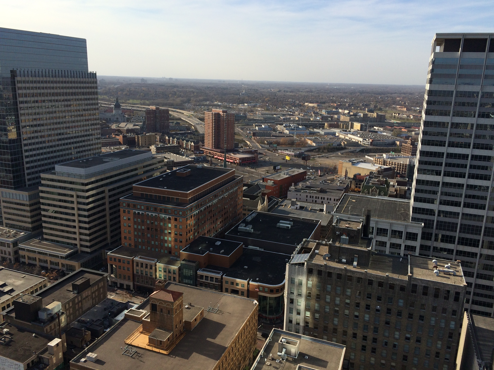

Exploring the Magnificence of Minneapolis: The Foshay Tower Observation
Deck
June 15, 2015
Welcome to my blog, where I take you on an unforgettable journey through
the vibrant city of Minneapolis. Today, we'll be ascending the iconic
Foshay Tower and experiencing its breathtaking Observation Deck. Join me
as we soak in the panoramic views, learn about the tower's rich history,
and discover why it has become a must-visit destination for locals and
tourists alike.

A Historic Icon
The Foshay Tower, standing tall at 447 feet, is an architectural
masterpiece that has graced the Minneapolis skyline since 1929. Designed
by renowned architect William Foshay, this Art Deco gem was originally
constructed as a tribute to the Washington Monument and served as a
symbol of Foshay's entrepreneurial success. Today, it remains a
prominent landmark and an emblem of the city's heritage.
The Ascend
As you step into the Foshay Tower, anticipation builds as you make your
way to the elevators that will transport you to the Observation Deck.
Feel the thrill as you ascend to the 30th floor, eagerly anticipating
the awe-inspiring views that await you.
Panoramic Delights
Upon reaching the Observation Deck, prepare to have your breath taken
away. Through floor-to-ceiling windows, you'll be greeted by a
360-degree panorama that showcases the beauty of Minneapolis in all its
glory. From the picturesque skyline to the serene waters of the
Mississippi River, each vantage point offers a unique perspective of the
city's charms.
City Highlights
As you take in the views, keep an eye out for some of Minneapolis' most
notable landmarks. The sparkling waters of Lake Calhoun and Lake
Harriet, the iconic Guthrie Theater, and the bustling Nicollet Mall are
just a few of the sights that can be spotted from the Observation Deck.
Capture these moments through your camera lens or simply let them etch
themselves into your memory.
Immersed in History
The Foshay Tower Observation Deck not only provides stunning views but
also offers a glimpse into the tower's captivating history. Explore the
exhibits that showcase the tower's construction, its original purpose as
a headquarters for the Foshay Company, and the subsequent transformation
into a hotel and observation deck. Delve into the stories that have
shaped this architectural gem and gain a deeper appreciation for its
significance to the city.
Visiting the Foshay Tower Observation Deck is an experience that
combines breathtaking vistas, architectural splendor, and a captivating
history lesson. As you descend from the heights of this iconic landmark,
you'll carry with you memories of Minneapolis' skyline, forever etched
in your mind. Whether you're a local or a visitor, the Foshay Tower
Observation Deck promises a truly unforgettable adventure in the heart
of the city.